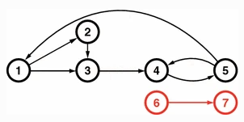
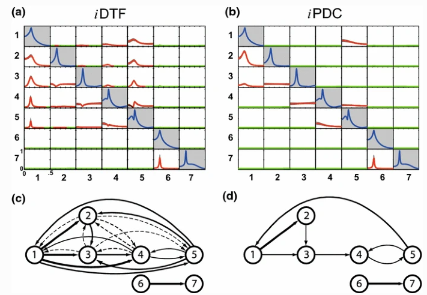

Baccala & Sameshima (2001b) 7-dimension VAR[2] model with loop and feedback
Description:
Baccala & Sameshima. Overcoming the limitations of correlation analysis for many simultaneously processed neural structures, Progress in Brain Research, 130:33--47, 2001.
http://dx.doi.org/10.1016/S0079-6123(01)30004-3
See also:
- Koichi Sameshima, Daniel Y. Takahashi, Luiz A. Baccala. On the statistical performance of Granger-causal connectivity estimators. Brain Informatics (2015) 2:119?133.
http://dx.doi.org/10.1007/s40708-015-0015-1
Example Model 1 - 7-dimension VAR[2] model with loop and feedback
Contents
Data sample generation
clear; clc; format compact; format short nDiscard = 50000; % discarded points at beginning of simulation nSegLength = 5000; % number of analyzed samples points N = nDiscard + nSegLength; % number of simulated points u = fbaccala2001b_model1_feedback_milano( nSegLength, nDiscard ); [nSegLength,nChannels]=size(u); %chLabels = []; % or chLabels = {'x_1';'x_2';'x_3';'x_4';'x_5';'x_6';'x_7'}; fs = 1;
======================================================================
Linear VAR[2] Model I
Baccala & Sameshima. Prog Brain Research, 130:33--47, 2001.
x1-->x2 x1-->x3 x2-->x3 x3-->x4 x4==>x5 x5-->x1 x5-->x4 x6==>x7
======================================================================
Model Interaction diagram, model equation and expected results

Figure 2a from Baccala & Sameshima. Biol. Cybern. 84:463-474, 2001.
Equation Model I with feedback

iDTF and iPDC expected results

Data pre-processing: detrending and standardization options
flgDetrend = 1; % Detrending the data set flgStandardize = 0; % No standardization [nChannels,nSegLength] =size(u); if nChannels > nSegLength, u = u.'; [nChannels,nSegLength]=size(u); end; if flgDetrend, for i=1:nChannels, u(i,:)=detrend(u(i,:)); end; disp('Time series were detrended.'); end; if flgStandardize, for i=1:nChannels, u(i,:)=u(i,:)/std(u(i,:)); end; disp('Time series were scale-standardized.'); end;
Time series were detrended.
MVAR model estimation
alpha = 0.01; maxIP = 30; % maximum model order to consider. alg = 1; % 1: Nutall-Strand MVAR estimation algorithm criterion = 1; % 1: AIC, Akaike Information Criteria fprintf('\n') disp('Running MVAR estimation routine.') [IP,pf,A,pb,B,ef,eb,vaic,Vaicv] = mvar(u,maxIP,alg,criterion); disp(['Number of channels = ' int2str(nChannels) ' with ' ... int2str(nSegLength) ' data points; MAR model order = ' int2str(IP) '.']); fprintf('\n')
Running MVAR estimation routine. maxOrder limited to 30 IP=1 vaic=314088.471329 IP=2 vaic=297929.469754 IP=3 vaic=297974.108862 Number of channels = 7 with 5000 data points; MAR model order = 2.
Testing for adequacy of MAR model fitting through Portmanteau test
h = 20; % testing lag MVARadequacy_signif = 0.05; % VAR model estimation adequacy significance % level aValueMVAR = 1 - MVARadequacy_signif; % Confidence value for the testing flgPrintResults = 1; [Pass,Portmanteau,st,ths] = mvarresidue(ef,nSegLength,IP,aValueMVAR,h,... flgPrintResults);
----------------------------------------------------------------------
MVAR Residues test for whiteness
======================================================================
Good MAR model fitting! Residues white noise hypothesis NOT rejected.
Pass = 0.0438776
st = 940.579
Granger causality test (GCT) and instantaneous GCT (iGCT)
gct_signif = alpha; % Granger causality test significance level igct_signif = alpha; % Instantaneous GCT significance level metric = 'info'; % euc = original PDC or DTF; % diag = generalized PDC (gPDC) or DC; % info = information PDC (iPDC) or iDTF. flgPrintResults = 1; [Tr_gct, pValue_gct] = gct_alg2(u,A,pf,gct_signif,flgPrintResults); [Tr_igct, pValue_igct] = igct_alg(u,A,pf,igct_signif,flgPrintResults);
----------------------------------------------------------------------
GRANGER CAUSALITY TEST
======================================================================
Connectivity matrix:
NaN 0 1 0 1 0 0
1 NaN 0 0 0 0 0
1 1 NaN 0 0 0 0
0 0 1 NaN 1 0 0
0 0 0 1 NaN 0 0
0 0 0 0 1 NaN 0
0 0 0 1 0 1 NaN
Granger causality test p-values:
NaN 0.6364 0.0016 0.2037 0 0.8152 0.5705
0 NaN 0.0781 0.4398 0.2650 0.3092 0.5667
0 0 NaN 0.7667 0.1323 0.4069 0.7486
0.9779 0.6814 0 NaN 0 0.4785 0.7703
0.0949 0.0681 0.9801 0 NaN 0.1466 0.2944
0.3207 0.6830 0.0474 0.1983 0.0027 NaN 0.4577
0.7477 0.4955 0.0271 0.0047 0.9398 0 NaN
Elapsed time is 0.016566 seconds.
----------------------------------------------------------------------
INSTANTANEOUS GRANGER CAUSALITY TEST
======================================================================
Instantaneous connectivity matrix:
NaN 0 0 0 0 0 0
0 NaN 0 0 0 0 0
0 0 NaN 0 0 0 0
0 0 0 NaN 0 0 0
0 0 0 0 NaN 0 0
0 0 0 0 0 NaN 0
0 0 0 0 0 0 NaN
Instantaneous Granger causality test p-values:
NaN 0.9699 0.9226 0.5607 0.2755 0.4920 0.3604
0.9699 NaN 0.3106 0.3205 0.7217 0.5988 0.8746
0.9226 0.3106 NaN 0.2576 0.5079 0.2621 0.7797
0.5607 0.3205 0.2576 NaN 0.2242 0.8160 0.9610
0.2755 0.7217 0.5079 0.2242 NaN 0.6198 0.7020
0.4920 0.5988 0.2621 0.8160 0.6198 NaN 0.8689
0.3604 0.8746 0.7797 0.9610 0.7020 0.8689 NaN
>>>> Instantaneous Granger causality NOT detected.
Information PDC estimation
PDC analysis results are saved in c structure. See asymp_pdc.m or issue
>> help asymp_pdc
command for more detail.
nFreqs = 128;
c = asymp_pdc(u,A,pf,nFreqs,metric,alpha); % Estimate PDC and asymptotic statistics
c.Tragct = Tr_gct;
c.pvaluesgct = pValue_gct;
 Matrix Layout Plotting
Matrix Layout Plotting
flgPrinting = [1 0 1 2 3 0 2]; % overriding default setting flgScale = 1; flgMax = 'pdc'; flgSignifColor = 3; flgColor = [0]; w_max=fs/2; strTitle1 = ['Model I with feedback: ']; strTitle2 = ['[N=' int2str(nSegLength) 'pts; IP=' int2str(c.p) ' ]']; strTitle =[strTitle1 strTitle2]; strID = 'Baccala & Sameshima (2001) Example 3'; [hxlabel,hylabel] = xplot(strID,c,flgPrinting,fs,w_max,chLabels, ... flgColor,flgScale,flgMax,flgSignifColor); xplot_title(alpha,metric,'pdc',strID)

PDC inference p-values
flgPrinting = [1 1 1 2 3 0 0]; flgScale = 2; [hxlabel hylabel] = xplot_pvalues(strID, c, ... flgPrinting,fs,w_max,chLabels,flgColor,flgScale); xplot_title(alpha,metric,'p-value PDC',strTitle);

iDTF estimation
metric = 'info';
d = asymp_dtf(u,A,pf,nFreqs,metric,alpha); % Estimate PDC and asymptotic statistics
d.Tragct = Tr_gct;
d.pvaluesgct = pValue_gct;
iDTF^2 Matrix Layout Plotting
flgPrinting = [1 0 1 1 0 0 2]; % overriding default setting flgScale = 1; flgMax = 'TCI'; flgSignifColor = 3; flgColor = [0]; w_max=fs/2; strTitle1 = ['Model I with feedback: ']; strTitle2 = ['[N=' int2str(nSegLength) 'pts; IP=' int2str(c.p) ' ]']; strTitle =[strTitle1 strTitle2]; strID = 'Baccala & Sameshima (2001) Example 3'; [hxlabel,hylabel] = xplot(strID,d,flgPrinting,fs,w_max,chLabels, ... flgColor,flgScale,flgMax,flgSignifColor); xplot_title(alpha,metric,'dtf',strTitle);

iDTF^2 Matrix Layout Plotting with Fine y-axis scaling
flgPrinting = [1 1 1 2 0 0 2]; % overriding default setting flgScale = 2; flgMax = 'TCI'; flgSignifColor = 3; flgColor = [1]; w_max=fs/2; strTitle1 = ['Model I with feedback: ']; strTitle2 = ['[N=' int2str(nSegLength) 'pts; IP=' int2str(c.p) ' ]']; strTitle =[strTitle1 strTitle2]; strID = 'Baccala & Sameshima (2001) Example 3'; [hxlabel,hylabel] = xplot(strID,d,flgPrinting,fs,w_max,chLabels, ... flgColor,flgScale,flgMax,flgSignifColor); xplot_title(alpha,metric,'dtf',strTitle); % End of example simulation.